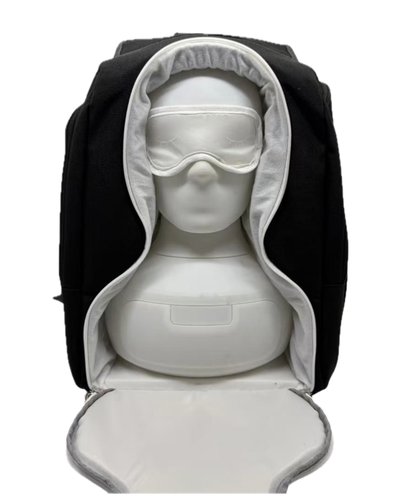

Product development · 2025
Furpack — a backpack for Furhat
From full-scale prototypes to a manufacturable transport solution.
- Context
- Furhat Robotics · Prototyping & Concepting
- Period
- 2025
- My work
- Product design · Soft-goods prototyping · Technical documentation
01 / The design challenge
Designing transport around the robot.
Furhat regularly travels between demonstrations, research sessions and events. I led the development of a dedicated backpack from scratch, exploring how the form, construction and internal layout could accommodate the robot while remaining a practical transport product.
02 / Early prototyping
Learning by making it full-size.
The development began with sketches, morphological analysis and physical models. Paper and sewn-fabric prototypes made it possible to test construction ideas at full scale and identify which concepts were worth developing further.

03 / Developed design
Turning the concept into a dedicated Furhat backpack.
The concept evolved into a purpose-built backpack with an exterior designed specifically for Furhat and an internal layout shaped around the robot. These iterations defined the backpack’s exterior form, internal layout and overall construction concept.


04 / Manufacturing handoff
Communicating the design beyond the prototype.
I prepared a technical pack for manufacturers and discussed construction and feasibility with them, moving the project from an internal prototype toward a manufacturable proposal.
Outcome
Furpack progressed from sketches and full-scale prototypes to a developed backpack concept and manufacturing documentation.